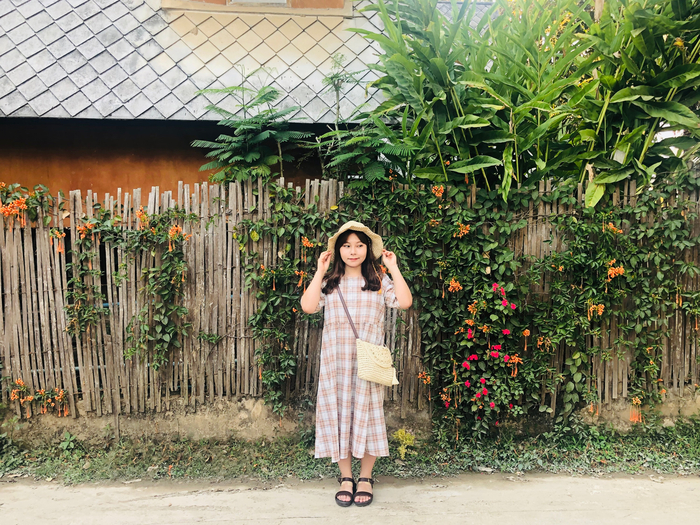

_degree
Chosun university / Dept. of Painting
HongIk university Graduate School of Business / Art and Cultural Management
_career
2021.01.~2022.04. : Seoul Foundation for Arts and Culture
2020.04.~2020.12. : Jongno Foundation for Art&Culture
2019.02.~2020.03. : Seoul Hall of Urbanism&Architecture
2017.02.~2018.12. : Seoul Citizens Hall